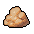

Fat
| Fat | |
|---|---|
 | |
General Information
| |
Type :
|
Bodypart |
Stack size:
|
30 |
Source(s)
| |
| Autopsy | |
Study Information
| |
Study reward:
|
|
Decomposition Products
| |
| Slowing solution | |
Technical Information
| |
Internal name:
|
fat |

Fat is a body part that can be extracted from a corpse at the autopsy table. Upon removal, it has the effect of removing one Red Skull  and adding one White Skull
and adding one White Skull  , similar to blood. In addition, similar to most other anatomy and theology items, it can be studied at the Study table for a
, similar to blood. In addition, similar to most other anatomy and theology items, it can be studied at the Study table for a  reward. For more information, see corpses.
reward. For more information, see corpses.
Recipe
| Preparation place | |
|---|---|
| Item Produced | Materials Required |
| 1× Fat |
1× |
Study
| Study table | |||
|---|---|---|---|
| Tech Points | Resources Required | Energy | Notes |
| 1× Faith 1× Science |
- |
Decomposes into: solution | |
Crafting
| Vine press | |
|---|---|
| Item Produced | Required Materials |
| 10× Oil |
3× Fat |
| Church workbench | |
| Item Produced | Materials Required |
| 4× Candle (1) |
2× Fat 2× Beeswax 1× Hemp rope |
| 4× Candle (3) |
2× Fat 2× Beeswax 3× White paint |
Alchemy
| Hand mixer | |
|---|---|
| Item Produced | Materials Required |
| 1× Slowing solution |
1× Fat |
| |||||||||||